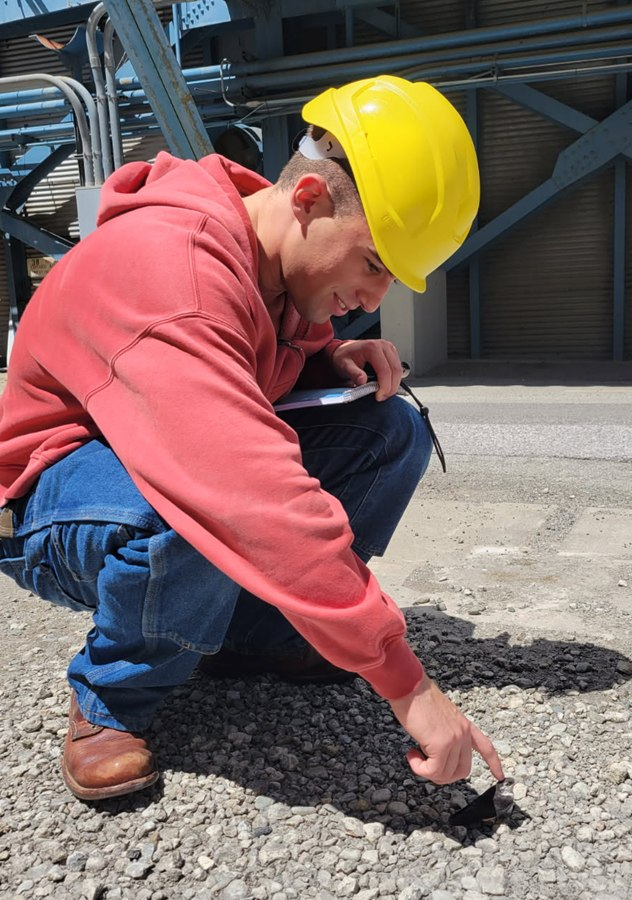
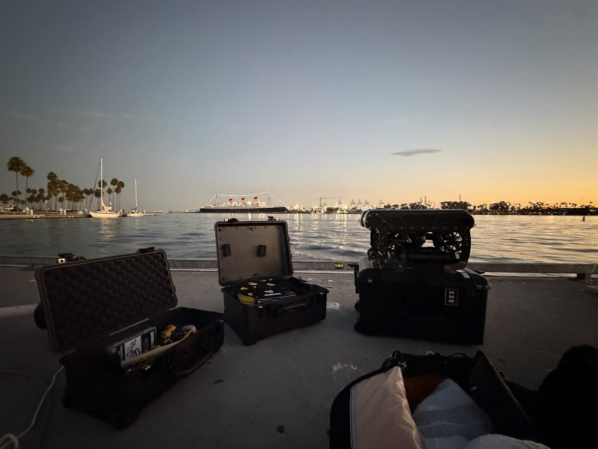
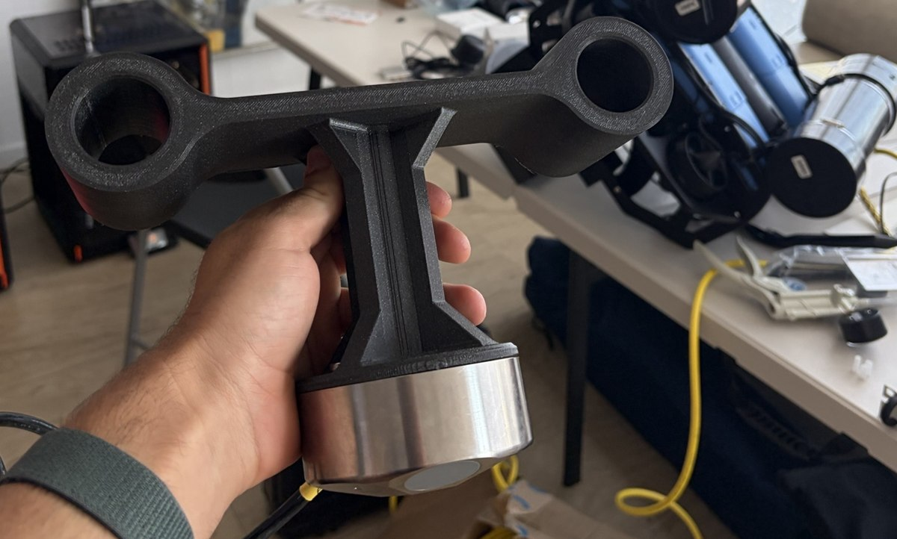

Hey, I’m Blase.
Hardware, software, embedded, DAQ? You name it, I can do it.
I’m a mechanical engineering undergraduate at UC San Diego, graduating in 2027 and staying on for a master’s. I’m mostly focused on mechanical hardware design (SOLIDWORKS, Siemens NX), but I also dabble in a bunch of other things: PCB design, basic scripting and automation (Python, MATLAB), plus some basic exposure to machining and manufacturing.
Some of the things I’ve worked on so far include instrumentation hardware for a full-scale wind tunnel at NASA Ames Research Center, a CAN bus motor control network in Professor Gravish’s bioinspired robotics lab, and composite wheel hubs and compliant end effectors for UCSD’s Mars rover team.
A few of these projects I’ve highlighted below. You can see the rest on my projects page, and my résumé is here as well.

On site at NASA Ames.
Currently
| Internship | Mechanical Engineering Intern, Odin Dynamics: full-vehicle wire harnessing, RF communication mast design & trade studies, test rigs and DAQ for sonar, DVL and INS/GPS field testing. |
|---|---|
| Research | Undergraduate Research Assistant, Gravish Bioinspired Robotics Lab: CAN bus control architecture for a five-bar legged testbed. |
| Team | Electromechanical Engineer, UCSD Yonder Dynamics: Mars rover composites, soft manipulators and power hardware. |
| School | B.S. Mechanical Engineering, UC San Diego: expected Winter 2027, 3.94 GPA. M.S. incoming Fall 2028. |


Selected work
-

NFAC Transducer Adaptor PCB
A low-cost KiCad board that fixes a signal-clipping condition on decades-old strain gauge amplifiers, recovering roughly two channels per board across a NASA wind tunnel data acquisition system.
-

Rover Fin-Ray End Effector
A compliant TPU gripper whose ribs buckle in a controlled way so each finger wraps around whatever it touches. Fielded on our team's 2026 competition rover.
-

Thermoacoustic Refrigerator
A heat pump driven by a standing acoustic pressure wave. No compressor, no refrigerant, no moving parts! Led a three-person team and reached a steady-state 4°C drop.
-

Carbon Fiber Wheel Hubs
A three-ply vacuum-bag wet layup over a wood-lathed mould, CNC post-processed. Half the weight of the printed hubs they replaced.